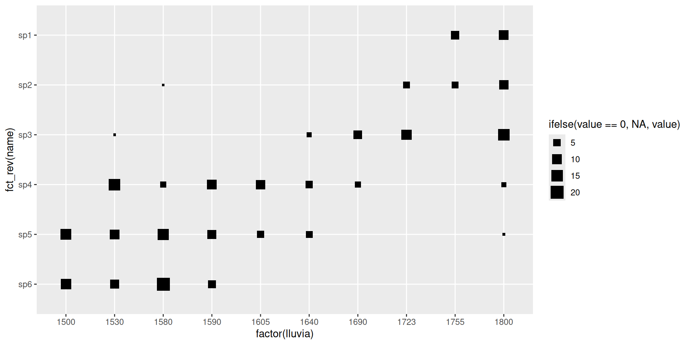

matrix(data=NA, nrow = 2, ncol=2) [,1] [,2]
[1,] NA NA
[2,] NA NA
matrix()vs. data.frame() vs. array()matrix(): solo numeros o solo caracteresdata.frame(): mix de tipos numeros y caracteresarray() son n-dimensionalesarray()matrix(data=NA, nrow = 2, ncol=2) [,1] [,2]
[1,] NA NA
[2,] NA NAmatrix() y array()a <- matrix(1:6, ncol = 3, nrow = 2)
b <- array(1:12, c(2, 3, 4))a <- matrix(1:6, ncol = 3, nrow = 2)
a [,1] [,2] [,3]
[1,] 1 3 5
[2,] 2 4 6b <- array(1:12, c(2, 3, 4))
b, , 1
[,1] [,2] [,3]
[1,] 1 3 5
[2,] 2 4 6
, , 2
[,1] [,2] [,3]
[1,] 7 9 11
[2,] 8 10 12
, , 3
[,1] [,2] [,3]
[1,] 1 3 5
[2,] 2 4 6
, , 4
[,1] [,2] [,3]
[1,] 7 9 11
[2,] 8 10 12matrix()matrix(data=NA, nrow = 2, ncol=2,dimnames = list(c("row1","row2"),
c("col1", "col2"))) col1 col2
row1 NA NA
row2 NA NAbyrow=T, el llenado se da por filasvec = c("a","b","c","d","e","f")
matrix(vec, nrow = 3, byrow = T ) [,1] [,2]
[1,] "a" "b"
[2,] "c" "d"
[3,] "e" "f" byrow=F, el llenado se da por columnasvec = c("a","b","c","d","e","f")
matrix(vec, nrow = 3, byrow = F ) [,1] [,2]
[1,] "a" "d"
[2,] "b" "e"
[3,] "c" "f" diag()a <- matrix(1:6, ncol = 3, nrow = 2)
a [,1] [,2] [,3]
[1,] 1 3 5
[2,] 2 4 6diag(a)[1] 1 4

a <- matrix(1:9, nrow=3)
b <- diag(rep(1,3))
a [,1] [,2] [,3]
[1,] 1 4 7
[2,] 2 5 8
[3,] 3 6 9 b [,1] [,2] [,3]
[1,] 1 0 0
[2,] 0 1 0
[3,] 0 0 1 a <- matrix(1:9, nrow=3)
b <- diag(rep(1,3))
a + b [,1] [,2] [,3]
[1,] 2 4 7
[2,] 2 6 8
[3,] 3 6 10 a <- matrix(1:9, nrow=3)
b <- diag(rep(1,3))
a [,1] [,2] [,3]
[1,] 1 4 7
[2,] 2 5 8
[3,] 3 6 9 b [,1] [,2] [,3]
[1,] 1 0 0
[2,] 0 1 0
[3,] 0 0 1 a - b [,1] [,2] [,3]
[1,] 0 4 7
[2,] 2 4 8
[3,] 3 6 8 a <- matrix(1:9, nrow=3)
d <- c(0,0,1)
a [,1] [,2] [,3]
[1,] 1 4 7
[2,] 2 5 8
[3,] 3 6 9d[1] 0 0 1a + d [,1] [,2] [,3]
[1,] 1 4 7
[2,] 2 5 8
[3,] 4 7 10 a <- matrix(1:9, nrow=3)
a + 1 [,1] [,2] [,3]
[1,] 2 5 8
[2,] 3 6 9
[3,] 4 7 10 a <- matrix(1:9, nrow=3)
b <- 1
a [,1] [,2] [,3]
[1,] 1 4 7
[2,] 2 5 8
[3,] 3 6 9 a + b [,1] [,2] [,3]
[1,] 2 5 8
[2,] 3 6 9
[3,] 4 7 10 a <- matrix(1:9, nrow=3)
b2 <- matrix(b, nrow=1)
b2
a + b2%*% se aplica par las multiplicacionesa <- matrix(1:4, nrow=2)
b <- diag(rep(1,2))
d <- matrix(c(0,1), nrow=2)
a [,1] [,2]
[1,] 1 3
[2,] 2 4b [,1] [,2]
[1,] 1 0
[2,] 0 1d [,1]
[1,] 0
[2,] 1a <- matrix(1:4, nrow=2)
b <- diag(rep(1,2))
d <- matrix(c(0,1), nrow=2)
a %*% b # ¿Salió bien? [,1] [,2]
[1,] 1 3
[2,] 2 4a <- matrix(1:4, nrow=2)
b <- diag(rep(1,2))
d <- matrix(c(0,1), nrow=2)
a %*% d # ¿esta? [,1]
[1,] 3
[2,] 4a <- matrix(1:4, nrow=2)
b <- diag(rep(1,2))
d <- matrix(c(0,1), nrow=2)
d %*% a # ¿y esta?
det()a <- matrix(1:4, nrow=2)
a [,1] [,2]
[1,] 1 3
[2,] 2 4(1*4) - (3*2)[1] -2d <- det(a)
d[1] -2inva <- matrix(c(4,-3,-2,1), nrow=2)
inva [,1] [,2]
[1,] 4 -2
[2,] -3 1(4/det(a))[1] -2(-3/det(a))[1] 1.5(-2/det(a))[1] 1(1/det(a))[1] -0.5solve() calcula el inversot(), que es la función para transponer la matriza <- matrix(1:4, nrow=2)
ainv <- solve(a)
ainv [,1] [,2]
[1,] -2 1.5
[2,] 1 -0.5a %*% ainv [,1] [,2]
[1,] 1 0
[2,] 0 1M = matrix(c(2,3,4,0,1,2), nrow=2,ncol=3,byrow=T,
dimnames =
list(c("I","II"),
c("A", "B","C")))
M A B C
I 2 3 4
II 0 1 2N = matrix(c(5,3,1), nrow=3,ncol=1,byrow=F,
dimnames = list(c("A","B","C")))
N [,1]
A 5
B 3
C 1M = matrix(c(2,3,4,0,1,2), nrow=2,ncol=3,byrow=T,
dimnames = list(c("I","II"),
c("A", "B","C")))
N = matrix(c(5,3,1), nrow=3,ncol=1,byrow=F,
dimnames = list(c("A","B","C"))). . .
[,1]
I 23
II 5Matrix
DenseM <- matrix(10 + 1:28, 4, 7) # crear matrix
M <- cbind(-1, M) # poner una columna con -1
M[2, c(2,4:6)] <- 0 # agregar unos ceros
M <- rbind(0, M, 0) #agregar más ceros
M[1:2,2] <- NA # agregar NAs
M[2:6,8] <- 0 # agregar otros ceros
M [,1] [,2] [,3] [,4] [,5] [,6] [,7] [,8]
[1,] 0 NA 0 0 0 0 0 0
[2,] -1 NA 15 19 23 27 31 0
[3,] -1 0 16 0 0 0 32 0
[4,] -1 13 17 21 25 29 33 0
[5,] -1 14 18 22 26 30 34 0
[6,] 0 0 0 0 0 0 0 0Sparselibrary(Matrix)
sM <- as(M, "sparseMatrix")
sM6 x 8 sparse Matrix of class "dgCMatrix"
[1,] . NA . . . . . .
[2,] -1 NA 15 19 23 27 31 .
[3,] -1 . 16 . . . 32 .
[4,] -1 13 17 21 25 29 33 .
[5,] -1 14 18 22 26 30 34 .
[6,] . . . . . . . .phyloregion
dist()x <- matrix(1:6, nrow = 3)
dist(x) 1 2
2 1.414214
3 2.828427 1.414214class(x)[1] "matrix" "array" vegan()library(vegan)
data(varespec)
vare.dist <- vegdist(varespec)
vare.dist 18 15 24 27 23 19 22
15 0.5310021
24 0.6680661 0.3597783
27 0.5621247 0.4055610 0.4934947
23 0.3747078 0.3652097 0.5020306 0.4286111
19 0.5094738 0.4560757 0.5092318 0.4878190 0.3606242
22 0.6234419 0.3579517 0.5010050 0.4655224 0.4812706 0.4726483
16 0.5337610 0.3976674 0.5907623 0.5683930 0.4094312 0.4496731 0.2678031
28 0.8418209 0.5225414 0.5736665 0.3027802 0.6979519 0.6431734 0.5985666
13 0.3453347 0.6063846 0.7576747 0.7543736 0.6221471 0.5739244 0.6948736
14 0.5449810 0.4803756 0.6533606 0.7467915 0.5645808 0.6331942 0.5357609
20 0.3879069 0.3784188 0.4346892 0.4957833 0.2877014 0.3953776 0.4627020
25 0.6318891 0.3376115 0.3369098 0.5001593 0.4258617 0.4311299 0.3822981
7 0.3603697 0.6717391 0.7931069 0.7792917 0.6390838 0.6958570 0.7459886
5 0.4955699 0.7178612 0.8561753 0.8732190 0.7295255 0.7898205 0.8611451
6 0.3382309 0.6355122 0.7441373 0.7496935 0.6252483 0.5684030 0.7249162
3 0.5277480 0.7578503 0.8382119 0.8090236 0.7128798 0.5302756 0.8026152
4 0.4694018 0.6843974 0.8309875 0.8413800 0.7117919 0.5177604 0.8015314
2 0.5724092 0.8206269 0.8372551 0.7581924 0.7249869 0.5389222 0.8321464
9 0.6583569 0.7761039 0.7590517 0.7415898 0.6693889 0.5393143 0.7725082
12 0.4688038 0.6794199 0.6894538 0.6253616 0.5384762 0.4288556 0.7051751
10 0.6248996 0.7644564 0.7842829 0.7096540 0.6625476 0.5059910 0.7875328
11 0.4458523 0.4716274 0.5677373 0.6322919 0.4710280 0.3293493 0.5812219
21 0.5560864 0.7607281 0.7272727 0.5456001 0.4951221 0.5315894 0.6771167
16 28 13 14 20 25 7
15
24
27
23
19
22
16
28 0.7015360
13 0.5514941 0.8600122
14 0.4826350 0.8239667 0.5547565
20 0.3737797 0.6963560 0.5785542 0.5115258
25 0.4306058 0.6086150 0.7412605 0.5541517 0.4518556
7 0.6596144 0.8960202 0.4533054 0.6550830 0.5959162 0.7556726
5 0.7184789 0.9539592 0.5148988 0.7257681 0.7153827 0.8600858 0.3237446
6 0.6509879 0.9014440 0.3515673 0.6227473 0.5439118 0.7343872 0.1754713
3 0.6837953 0.9234485 0.4965478 0.7836661 0.6690479 0.8168684 0.5154487
4 0.6462648 0.9381169 0.3881748 0.6734743 0.6771854 0.8400134 0.5601721
2 0.7354202 0.9053213 0.5968691 0.8592489 0.6951539 0.8179089 0.6465777
9 0.8185866 0.8686670 0.7292530 0.8282497 0.6982486 0.7884243 0.8318435
12 0.6342166 0.8543167 0.5902386 0.7507074 0.5182426 0.7062564 0.6991666
10 0.7656598 0.9016604 0.7160439 0.8304088 0.6706349 0.7845955 0.7697453
11 0.5172825 0.7544064 0.4272808 0.6743277 0.4461712 0.6175930 0.5262233
21 0.7474559 0.7248773 0.7212772 0.8096450 0.6320431 0.7466232 0.7933350
5 6 3 4 2 9 12
15
24
27
23
19
22
16
28
13
14
20
25
7
5
6 0.3984538
3 0.5634432 0.4517627
4 0.5377506 0.4665100 0.3592689
2 0.7257597 0.5552754 0.2099203 0.4841145
9 0.9014583 0.7223126 0.3885811 0.6222340 0.2330286
12 0.7808641 0.5762462 0.2641851 0.4870742 0.1846147 0.2277228
10 0.8504191 0.6567926 0.3413378 0.5776062 0.1456729 0.1117280 0.1793368
11 0.5563798 0.4077948 0.3002597 0.3215966 0.4209596 0.5145260 0.3688102
21 0.8888316 0.6720141 0.7507773 0.7641304 0.6779661 0.5952563 0.5602137
10 11
15
24
27
23
19
22
16
28
13
14
20
25
7
5
6
3
4
2
9
12
10
11 0.5043578
21 0.6147874 0.6713363dist() en objetos de formato ancholibrary(tidyr)
library(tidyverse)
x <- matrix(1:6, nrow = 3)
dx = dist(x)dx |>
as.matrix() |>
as.data.frame() |>
mutate(sites = c("1","2","3")) |>
pivot_longer(cols = c(1:3),
names_to = "sites2",
values_to = "distances") |>
head()# A tibble: 6 × 3
sites sites2 distances
<chr> <chr> <dbl>
1 1 1 0
2 1 2 1.41
3 1 3 2.83
4 2 1 1.41
5 2 2 0
6 2 3 1.41


moluscos.txtlibrary(readr)
library(here)
moluscos = read_table(file=here("dados","moluscos.txt"))
# importar los datos ambientales
ambi = read_table(file=here("dados","ambi.txt"))library(tidyverse)
moluscos <-
moluscos |>
select(c(sp1:sp6))
moluscos# A tibble: 10 × 6
sp1 sp2 sp3 sp4 sp5 sp6
<dbl> <dbl> <dbl> <dbl> <dbl> <dbl>
1 10 9 15 2 1 0
2 0 0 0 0 13 12
3 7 4 0 0 0 0
4 0 1 0 3 14 20
5 0 0 0 10 8 6
6 0 0 2 5 4 0
7 0 4 11 0 0 0
8 0 0 7 3 0 0
9 0 0 0 9 5 0
10 0 0 1 15 10 8molu.medias <-colSums(moluscos*ambi$lluvia)/colSums(moluscos)molu.ord<-moluscos[order(ambi$lluvia,decreasing=F),]
molu.ord1<-molu.ord[,order(molu.medias,decreasing=T)]ambi2 <- ambi[order(ambi$lluvia,decreasing=F),]
molu.ord2 <- cbind(molu.ord1,ambi2)molu.ord2 |>
pivot_longer(cols = c(sp1:sp6)) |>
ggplot(aes(x=factor(lluvia),y=fct_rev(name),size=ifelse(value==0,NA,value)))+
geom_point(shape=15)